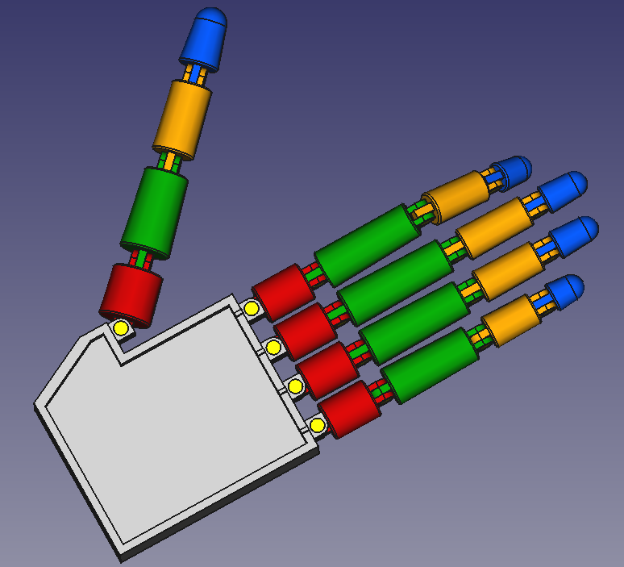
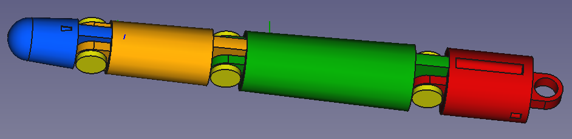
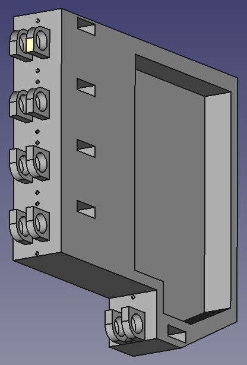
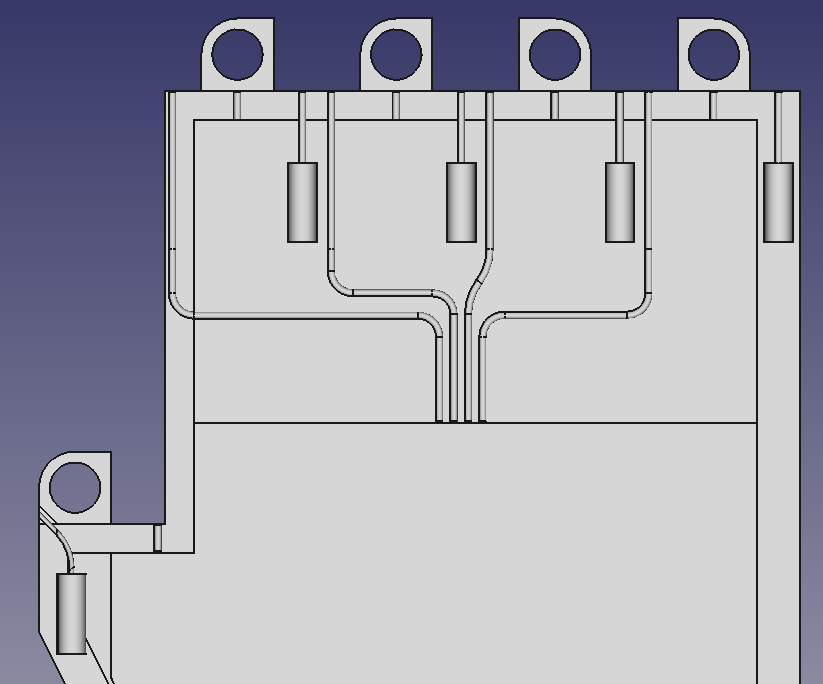

Main robotique
← RetourDescription :
Création d’une main robotisée en CAO fonctionnant avec un ESP32, des petits moteurs et du câble nylon.
Etapes :
- Codage en C++ de l’ESP32 pour contrôler un moteur
- Recherche des solutions techniques pour permettre aux doigts de se plier, de s’écarter et le système de rappel. On peut voir sur les photos les passages de câbles et les emplacements des ressorts de rappel.
- Solutions :
- L’écartement des doigts se fera sur le dessus de la paume de main avec un seul moteur, en tirant un câble passant à l’intérieur de la pièce rouge (représentant les métacarpes) et la paume.
Un moteur pour le pouce et un pour les 4 autres doigts, je sépare l’écartement du pouce et des autres doigts.
Le rappel se fera aussi par câble allant du métacarpe au ressort de rappel sur le dessus de la paume de la main - La flexion des doigts se fera sur le dessous de la paume de main avec un moteur par doigt, le câble passera à l’intérieur de chaque phalanges (partie intérieure) et accroché à la première en bleu.
Le rappel se fera sur partie extérieure des phalanges, avec un câble passant à l’intérieur jusqu’à l’emplacement du ressort de rappel sur le métacarpe rouge.
- L’écartement des doigts se fera sur le dessus de la paume de main avec un seul moteur, en tirant un câble passant à l’intérieur de la pièce rouge (représentant les métacarpes) et la paume.
- Dessin de l’ensemble des éléments en CAO sur Freecad et assemblage virtuel.
- Prochaine étape : impression des différentes pièces, montage de la main et ajout des moteurs et de l’ESP32
Environnement technique :
ArduinoIDE, ESP32, C++, Freecad



